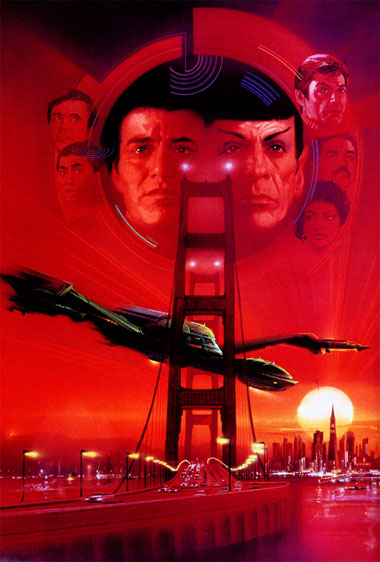
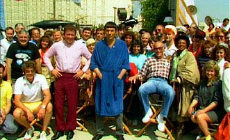
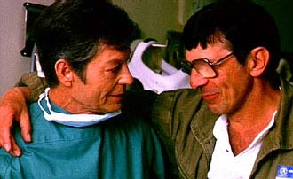

|

STAR TREK IV:
THE VOYAGE HOME
1986


Sinopse
comentada
Comentrios
Citaes
Efeitos
Especiais
Trilha Sonora
Trivia
Ficha
Tcnica
O
DVD
Meus Amigos,
Estamos
em Casa...
Foi preciso produzir quatro filmes de Jornada nas Estrelas para que o velho esprito da
Srie Clssica finalmente aflorasse. No que os outros segmentos produzidos para a tela grande tenham fracassado. Ao contrrio alis. De seu prprio modo,
"Jornada nas Estrelas: O Filme" trabalhou um tema pico e filosfico.
"A Ira de Khan" ofereceu drama e ao como jamais haviam sido mostradas na franquia antes. E
" Procura de Spock"... bem, " Procura de Spock" o que o ttulo diz.
Mas "A Volta para Casa", como o prprio nome tambm sugere, um esforo na tentativa de retornar s origens, exprimir no s a qualidade da srie original, como seu esprito. A qumica entre os personagens transparece aqui mais do que nunca, e, apesar de a Enterprise praticamente no estar no filme, fica claro que ela um elemento extremamente importante para o formato como um todo.
Uma olhada rpida por sobre o enredo e a premissa do filme faz supor que o objetivo era meramente produzir uma pseudo-comdia, explorando as bem conhecidas e cativantes relaes de amizade, lealdade, responsabilidade e companheirismo forjada entre os tripulantes da nave. Nada mais injusto do que isso.
Apesar de explorar sabiamente uma visita ao sculo 20 como forma de aproximar o pblico (especialmente o "no-especializado") da histria,
"A Volta para Casa" est longe de ser um segmento irrelevante em termos de seu contedo. A comear pela abertura, com uma providencial homenagem tripulao do nibus espacial Challenger, que pereceu durante uma decolagem naquele mesmo ano de 1986.

No contexto de crtica contempornea, o filme dirigido por Leonard Nimoy consegue ser muito mais efetivo do que a mdia das produes motivadas por alguma temtica ambientalista. Longe de um catastrfico "Free Willy", "A Volta para Casa" consegue lidar com baleias sem ser bobo.
Em vez disso, enfatiza o quanto no sabemos a respeito desses animais, e o quo ingnuos podemos ser ao julgar o ser humano a nica coisa importante e rara neste planeta. Apesar disso, no cai no discurso besta dos abraadores de rvores de planto, apresentando uma viso equilibrada da causa ecolgica e da necessidade de preservar, no mnimo, por fora do chamado "princpio da precauo".
Na entrevista de Leonard Nimoy ao TB (aqui), fica mais do que clara a preocupao do diretor do filme em lidar inteligentemente com a questo da barreira de comunicao entre espcies (colocada no s na forma de uma sonda cuja inteligncia somos incapazes de compreender, mas tambm na dificuldade de decifrar a linguagem prpria das baleias, desafio que at hoje se interpe aos cientistas).
Seramos bobos, ento, de considerar "A Volta para Casa" apenas um filme engraadinho capaz de atrair um pblico mais amplo. Mas tambm seramos ingnuos se no afirmssemos que essa impresso inicial foi a principal responsvel pelo sucesso do filme.

Com apelo fcil e personagem bens construdos durante duas dcadas, o filme estabeleceu pela primeira vez que Jornada nas Estrelas poderia de fato ser muito mais que um fenmeno cult com estranhos ecos na realidade dos no-fs de fico cientfica. No de surpreender, portanto, que seu lanamento tenha servido de trampolim para a Paramount promover a volta da franquia televiso, com
A Nova Gerao.
Foi na mesma festa em que se comemorou o lanamento de "A Volta para Casa" que a inteno de produzir uma nova srie de
Jornada acabou sendo anunciada, deixando um sabor agridoce na boca dos atores originais, que viram seu trabalho sendo usado para catapultar seus substitutos para a fama.
No h dvida de que "Jornada nas Estrelas IV" foi um marco definitivo da histria da franquia. Se
"O Filme" provou que Jornada seria capaz de vos maiores, depois de trs curtas temporadas na TV e outras duas como desenho animado,
"A Volta para Casa" consolidou o esforo envolvido em todas as produes anteriores, estabelecendo a marca como uma fora-motriz praticamente indestrutvel em Hollywood (paradigma que os produtores atualmente insistem em desafiar, superexpondo ao mximo o mercado com produtos de
Jornada nas Estrelas).
O filme tem momentos inesquecveis e traz de volta a velha dinmica entre o trio principal. Mas o que talvez nenhum outro filme ou episdio da srie tenha conseguido fazer, em nenhuma de suas encarnaes, se tornou a marca registrada deste especialssimo segmento cinematogrfico de
Jornada: pela primeira vez todos os personagens foram utilizados de forma coerente e natural, sem a necessidade de escrever cenas idiotas somente para dar falas ao elenco inteiro.
A estrutura do enredo permite que cada um dos personagens da tripulao da Enterprise tenha seu "pedao da ao". At mesmo os mais apagados, como Uhura e Sulu, se do bem por aqui. E vemos um verdadeiro show de Scotty e Chekov, dois personagens assumidamente perifricos na imensa maioria dos outros episdios e filmes com o elenco original.
A soma de elementos vencedores em "A Volta para Casa" to grande que se torna impossvel determinar qual a origem ou a causa principal para o seu sucesso. Em vez disso, a tnica do filme justamente a combinao ampla de vrios recursos antes dispersados em uma ou outra produo. Na concluso de uma trilogia,
"A Volta para Casa" parece cristalizar o que de melhor apareceu em
"A Ira de Khan" e a " Procura de Spock", retendo ainda um enredo exclusivo seu, o que traz ao filme uma sensibilidade totalmente diferente.

No toa que muitos vem "A Volta para Casa"
como um filme "diferente" de Jornada. Embora no se saiba claramente dizer em palavras, evidente que o foco e a construo da quarta aventura de Kirk e cia. na tela grande pouco tm em comum com as produes anteriores. Salvo o uso de seus maiores talentos.
Nick Meyer produziu um roteiro brilhante (ele escreveu a parte na Terra do sculo 20, enquanto Harve Bennett escreveu as partes do sculo 23), Leonard Nimoy ofereceu uma direo brilhante e relaxada, o elenco deu o melhor de si e pareceu, legitimamente, ter se divertido durante a produo. A magia claramente no ia se repetir novamente to cedo.
Mas isso no impediu William Shatner de angariar apoio para suceder Leonard na direo do filme seguinte. Apoiado por Bennett e por seu amigo Nimoy, ele conquistou a vaga. Num surto de inovao, teve a idia de trazer uma abordagem ainda mais radical franquia --um segmento altamente filosfico. Poderia a Enterprise encontrar Deus?
A resposta surgiu trs anos depois.